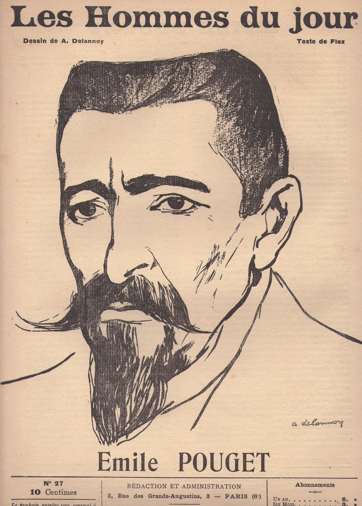

Contexte
Émile Pouget (1860-1931) est employé de magasin à Paris quand il fonde, à 19 ans, le premier syndicat des employés. Anarchiste, il lance en 1889 Le Père Peinard, un journal écrit en argot des faubourgs, drôle et féroce, qui connaît un grand succès. Poursuivi lors du « procès des Trente » en 1894, il s'exile à Londres puis revient en France.

Il pousse alors les anarchistes à entrer dans les syndicats, plutôt que de rester entre eux. Il devient l'un des dirigeants de la CGT et le rédacteur de son journal, La Voix du peuple. Cette brochure est l'un des textes de doctrine du syndicalisme révolutionnaire, à un moment où le débat fait rage : faut-il passer par les partis et le Parlement, ou agir directement ?
La thèse
L'action directe, c'est l'action des travailleuses et travailleurs par eux-mêmes, contre le patronat, sans représentant ni État. Elle n'est pas forcément violente : elle se définit par l'absence d'intermédiaire. Son horizon : la disparition du patron dans l'atelier.
Les idées, dans l'ordre
- Définition. L'action directe est l'expression même du syndicalisme de combat : la classe ouvrière agit en son nom propre.
- Contre la délégation. La démocratie représentative endort l'initiative : on attend tout de l'élu. L'action économique, au contraire, la réveille.
- Le syndicat éduque. Il donne confiance en soi, esprit d'initiative et sens du collectif. On y apprend à décider ensemble.
- L'expropriation progressive. Chaque lutte arrache un peu au capital (salaire, horaires, dignité), jusqu'au jour où les syndicats prennent en main la production.
- Le présent compte. La révolution se prépare dans les luttes quotidiennes, sans sacrifier aujourd'hui à un demain lointain.
- Contre le fatalisme. Ni l'effondrement automatique du capitalisme, ni la « loi d'airain » qui condamnerait les salaires au minimum vital. La volonté ouvrière fait bouger les salaires, et la misère seule ne pousse pas à la révolte : il faut l'organisation.
- La violence vient d'abord des classes dirigeantes : l'exploitation, la troupe envoyée contre les grévistes.
Les formes
La grève, qui profite même aux non-grévistes, et son aboutissement, la grève générale. Mais aussi le boycott, le label syndical (une étiquette pour les produits fabriqués dans de bonnes conditions) et le sabotage, auquel Pouget consacrera une brochure : travailler lentement, ou mal, quand on est mal payé. Il se moque de celles et ceux qui réduisent l'action directe à de la casse.
Débats et limites
- Les minorités agissantes. Pouget assume que ce sont des minorités conscientes qui entraînent la masse. Des critiques y ont vu un risque d'avant-garde qui décide pour les autres.
- Le syndicat suffit-il ? Malatesta répondait que non : un syndicat qui grandit devient prudent et gestionnaire. Voir Anarchie et organisation.
Et aujourd'hui ?
Grèves reconductibles décidées en assemblée générale, caisses de grève, blocages, coordinations de base : les mouvements sociaux actuels réinventent sans cesse l'action directe. Quand des salariées et salariés de plateformes, des agentes d'entretien ou des livreurs s'organisent eux-mêmes sans attendre une loi, ils sont dans la lignée de Pouget.
À retenir
- Agir sans intermédiaire, c'est à la fois une méthode et une école.
- Chaque victoire partielle est une petite expropriation.
- L'action directe n'est pas synonyme de violence.
- La suite romancée : Comment nous ferons la Révolution.
Le texte complet est sur Mamie Commune. Lire en ligne ou ouvrir le PDF.
Sources et pour aller plus loin
Le texte original
- Le texte complet sur Mamie Commune, à lire en ligne ou en PDF.
- « L'Action directe » sur la Bibliothèque anarchiste : le texte intégral, aussi en PDF et en livre numérique (EPUB).
Lire
- L'Action directe et autres écrits syndicalistes, Émile Pouget, Agone.Ses textes syndicalistes réunis et présentés.
- Le 1er Mai et Patron assassinNos fiches sur deux autres textes de Pouget.
Sur le web
- Émile Pouget sur WikipédiaDu Père Peinard à la CGT.
- Le Père PeinardSon journal en argot, une perle de la presse anarchiste.
- L'anarcho-syndicalismeLe courant qui prolonge ces idées dans le monde entier.
Fiche de lecture rédigée par la bande à Mamie d'après les textes de la Bibliothèque anarchiste francophone. Cette fiche est libre de reproduction.